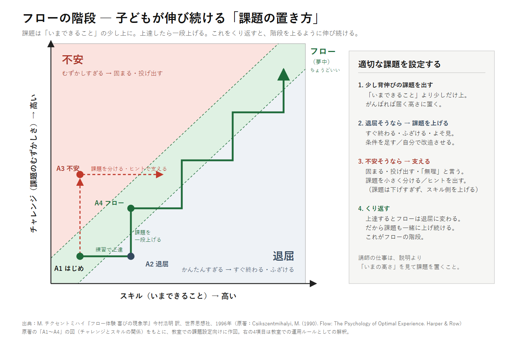

皆さん、お世話になっております。プログラミング教室、教室長の彦阪です。
最近、「子どもの成長のために、本当に必要なものは何か」ということだけを考えてみました。 教室として、決まった時間に、決まった内容をお約束することはもちろん大切です。 そのうえで、時間割やカリキュラムをいったん脇に置いて考えると、「授業」という言葉の意味そのものが変わって見えてきました。
成長とは「自分で、もっと」ができるようになること
子どもが成長したと言えるのは、昨日できなかったことが、今日は自分の力でできて、しかも「もっとやりたい」と思っているときだと私は考えています。
知識が増えただけでは、まだ半分です。「もっとやりたい」という気持ちが子どもの中に残っていないと、教室を出たところで伸びが止まってしまいます。 では、その気持ちはどうすれば育つのでしょうか。ここで役に立つのが、心理学者チクセントミハイの「フロー」という考え方です。
人が夢中になる「フロー」
チクセントミハイは、時間を忘れるほど何かに没頭している状態を「フロー」と名づけ、 それが起きやすいのは挑戦する課題の難しさと、自分のスキルがつり合っているときだと述べました。
- 課題が難しすぎると、不安になる（固まる、投げ出す、「無理」と言う）
- 課題が簡単すぎると、退屈になる（すぐ終わる、ふざける、よそ見をする）
- ちょうどつり合っていると、夢中になる

フローは、放っておくと退屈に変わる
この図でいちばん大事なのは、同じ課題のままでは、夢中は長続きしないということです。
はじめは夢中で取り組んでいた子も（A1）、練習してうまくなると、同じ課題では物足りなくなります（A2・退屈）。 そこで課題を一段上げると、ふたたび夢中になれます（A4）。 反対に、いきなり難しすぎる課題を出すと不安になってしまいます（A3）。そのときは課題を小さく分けたり、ヒントを出したりして、できることのほうを引き上げます。
これをくり返すと、子どもは階段を上るように伸びていきます。 上達すればするほど、次の課題も少しずつ難しくなっていく。だから、伸び続けることができるのです。
授業の本当の役割は「課題を置くこと」
こう考えると、授業での大人の仕事は、たくさん説明することではありません。 その子が「いま」どの高さにいるかを見て、ちょうどいい課題を置き続けることです。
同じ教室の同じ時間でも、ちょうどいい課題は一人ひとり違います。 全員に同じ課題を同じペースで出すと、ある子には簡単すぎ、別の子には難しすぎることになります。 プログラミングは、作ったものが動くか動かないかがすぐに分かるので、子ども自身も自分の高さに気づきやすい学びです。その良さを生かしたいと考えています。
そこで教室では、次の4つを課題の出し方の基準にしていきます。
- 少し背伸びの課題を出す：「いまできること」より少しだけ上。がんばれば届く高さに置く。
- 退屈そうなら、課題を上げる：条件を一つ足す。自分で改造してもらう。
- 不安そうなら、支える：課題を小さく分ける。ヒントを出す。課題を下げすぎず、できることのほうを増やす。
- くり返す：上達したら、また一段上げる。
ご家庭でも使える見方です
この図は、プログラミングに限らず、勉強やスポーツ、お手伝いにも当てはまります。 お子さんが「つまらない」と言うときは、簡単すぎるのかもしれません。 「できない」「やりたくない」と言うときは、難しすぎるのかもしれません。 どちらも、やる気がないのではなく、課題の高さが合っていないサインとして見ていただくと、声のかけ方が変わってくると思います。
子どもが自分から「もっとやりたい」と思える関わり方については、前の記事 「「やりたくてたまらない」は、育てられる」でも書いています。あわせてご覧ください。
おわりに
子どもたちが教室で過ごす時間が、ただ課題をこなす時間ではなく、少し背伸びをして、夢中になって、「できた」を重ねていく時間になるように。 一人ひとりの「いまの高さ」をよく見て、ちょうどいい課題を置き続けてまいります。
出典・参考
- M. チクセントミハイ『フロー体験 喜びの現象学』今村浩明 訳、世界思想社、1996年
- Csikszentmihalyi, M. (1990) Flow: The Psychology of Optimal Experience. Harper & Row.
- 記事中の図と「課題の出し方の4つの基準」は、上の本の考え方をもとに教室長が教室向けに整理したものです。